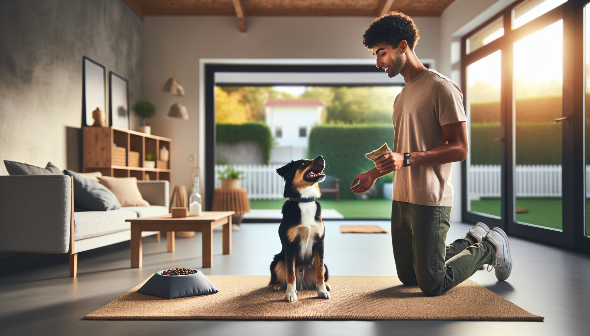

If you have ever felt like dog training needs hours of free time, perfect timing, and endless patience, here is the good news: it does not. In fact, one of the most effective ways to train a dog is with a short, consistent routine you can repeat every day. For busy dog owners, new puppy parents, and rescue adopters, a simple 15-minute daily dog training routine can create dramatic changes in behavior, focus, and confidence.
Dogs learn best through repetition, clarity, and motivation. That means a few minutes of structured practice every day often works better than one long session on the weekend. Short sessions help prevent frustration, keep your dog engaged, and make training feel doable for you too. Whether your goal is better manners, a stronger bond, fewer unwanted behaviors, or a calmer dog at home, this routine gives you a practical framework that fits real life.
Below, you will learn exactly how to structure a 15-minute routine, why it works, and how to adapt it for puppies, adult dogs, and rescue dogs. The methods are science-backed, reward-based, and designed to build trust while teaching useful everyday skills.
Dogs do not measure progress by the length of a training session. They respond to consistency, timing, and reinforcement. A daily 15-minute routine is powerful because it creates frequent learning opportunities without overwhelming your dog. This matters especially for puppies with short attention spans and rescue dogs who may still be adjusting to a new environment.
From a behavior science perspective, dogs repeat behaviors that are rewarded. When you practice key skills in short sessions and reward the right choices, those behaviors become stronger and more reliable over time. Just as important, brief sessions help you end on a success, which keeps training positive and sustainable.
Daily training also improves communication. Your dog starts to understand what earns rewards, what cues mean, and how to look to you for guidance. Over time, this can reduce common problems like jumping, pulling, ignoring cues, barking from frustration, and household chaos.
You do not need fancy equipment to get started. All you need is a few small treats, a quiet space, and a plan. Here is the routine:
This structure works because it balances engagement, learning, and decompression. It also mirrors how dogs function best: brief bursts of effort followed by a clear reward and reset.
You do not need to teach everything every day. In fact, rotating skills helps keep training fresh while building reliability. Choose one or two focus skills per session and repeat them over the week.
Here are some of the most useful behaviors to include:
For puppies, keep expectations low and prioritize confidence, socialization, handling, and simple cues. For rescue dogs, focus on predictability, trust-building, and low-pressure success. Adult dogs benefit from refreshing foundations and practicing skills in more distracting environments.
The routine itself matters, but how you deliver it matters even more. If you want lasting results, keep these principles in mind.
One of the biggest mistakes owners make is assuming their dog is being stubborn when the dog is actually confused, distracted, or not yet fluent in the skill. Think of training as teaching, not testing. Clear repetition with reinforcement creates understanding.
No single routine should look exactly the same for every dog. The key is matching the session to your dog in front of you.
For puppies: Keep sessions playful and very short within the 15-minute structure. You may do 30 to 60 seconds per exercise, with frequent breaks. Focus on name response, handling, crate games, potty routine support, and gentle confidence-building.
For rescue dogs: Go slower in the beginning. New environments can be stressful, and stress affects learning. Use simple patterns, reward calm choices, and avoid overwhelming your dog with too much novelty. Trust comes before precision.
For high-energy dogs: Do not skip the calm finish. These dogs often need help learning how to regulate, not just how to move more. Use food puzzles, mat work, and impulse control games alongside active skills like recall and leash work.
For shy or sensitive dogs: Use a gentle tone, lower your body language pressure, and let the dog choose to engage. Confidence grows when training feels safe and predictable.
If your dog is not improving yet, do not give up. Often, a few simple changes make a huge difference.
Progress is rarely perfectly linear. Some days will feel easy, and some will not. What matters most is the trend over time. Fifteen minutes a day, repeated over weeks, adds up to better habits and a more responsive dog.
With a consistent daily routine, many owners notice changes within one to two weeks: better attention, faster responses to cues, calmer transitions, and more engagement. Over a month or two, the transformation is often much more obvious. Dogs begin offering polite behaviors on their own, checking in more often, and recovering faster from distractions.
Just as important, you change too. You become clearer, more observant, and more confident in how you guide your dog. That shared understanding is what truly transforms training from a chore into a relationship-building habit.
The best dog training routine is not the most complicated one. It is the one you can do consistently. If you commit to 15 focused minutes a day, use rewards your dog loves, and build skills step by step, you can create meaningful behavior change in almost any dog.
Your dog does not need perfection. They need practice, patience, and a person who shows up every day. Start small, celebrate progress, and trust the process. Those 15 minutes may become the most valuable part of your day together.
A daily 15-minute training routine works because it is realistic, repeatable, and grounded in how dogs actually learn. For puppies, it builds foundations. For rescue dogs, it builds trust. For adult dogs, it sharpens manners and strengthens communication. The transformation comes from consistency, not intensity.
If you are ready to make training easier and more effective, start today with one short session. Keep it positive, keep it simple, and keep going. Small daily efforts create big long-term results.
Get our full Dog Training eBook series — new titles added weekly.